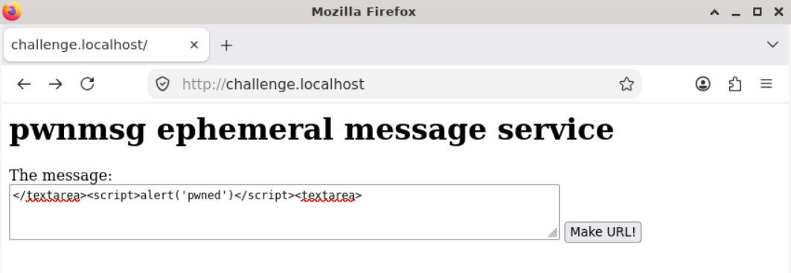
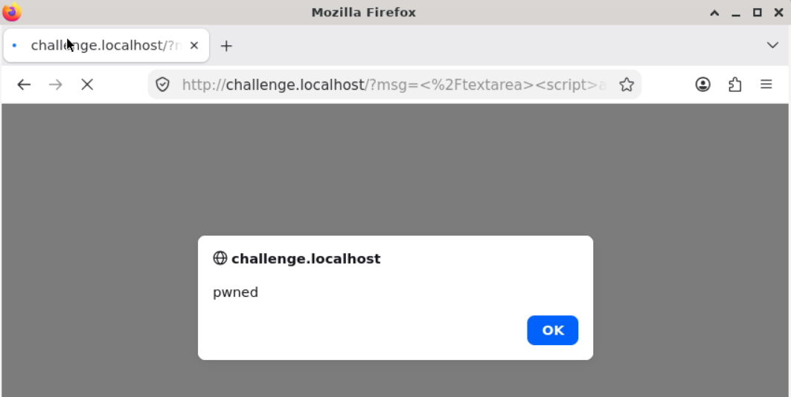
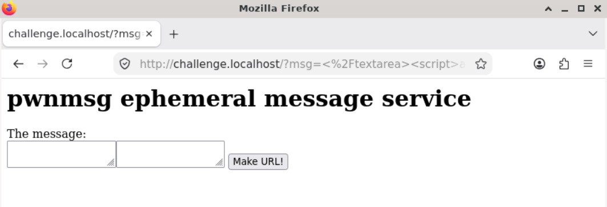
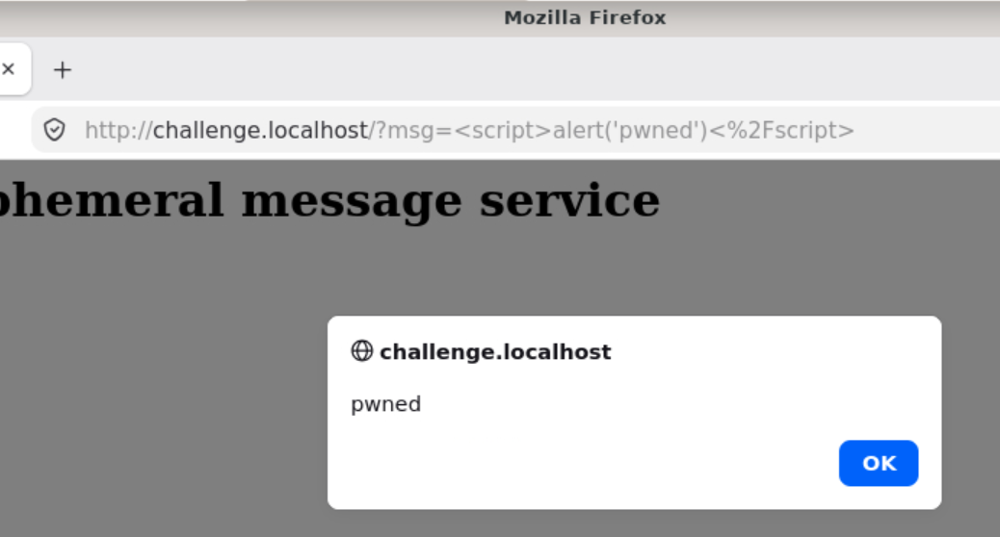

What is Cross-Site Scripting?
Cross-Site Scripting (XSS) is an attack where hackers will inject malicious scripts into an otherwise safe website. That way, when users visit the site and come across the malicious script, their browser will execute that code alongside the legitimate source code. Furthermore, because the browser sees the script as a valid part of the original website, the script will be able to access sensitive data used by the website or otherwise saved by the browser such as cookies or session tokens.
A successful XSS attack can enable hackers to:
- hijack a user's session and their account
- Access sensitive information
- install malware or bloatware
- modfiy content on the website
Types of Cross-Site Scripting
Persistent XSS Attacks
Persistent XSS attacks, sometimes called Stored attacks, occur when the hacker injects a script which is then permenantly stored on the website's servers, typically through their database. For instance, consider the following example from pwn.college.

In this example, the user is able to
submit</textarea><script>alert('pwned')</script><textarea> which
results in the following:


In this example, the website allowed the user to input a message which then updates the website's inner html. In real settings, persistent XSS attacks can be extremely damaging, as they infect all visitors who stumble across the page where the malicious script is stored. However, this type of XSS attack can be prevented by validating user input and removing executable code before displaying the user-modified page.
Reflected XSS Attacks
Reflected XSS attacks occur when a hacker encodes malicious scripts through an HTTP request (e.g: a link) which is reflected back in the target server's response.
For instance, consider this example from pwn.college. Consider the following link:
http://challenge.localhost/?msg=%3Cscript%3Ealert%28%27pwned%27%29%3C%2Fscript%3E
This link goes to challenge.localhost with a script encoded into the msg parameter. When a victim clicks this link, the following image is the result:

In real life, hackers will often conceal their attacks by sending malicious links in emails or message forums and setting the display text to something seemingly harmless. As a user, reflected XSS is much easier to avoid than persistent XSS because you can carefully inspect the links you click. On the other hand, with persistent XSS, even trustworthy pages can suddenly execute malicious code. Moreover, since the malicious scripts aren't stored on the website, the malicious payload has to be sent to each victim or hosted on a third-party website. Reflected XSS attacks can be dangerous because they tend to be easier than persistent XSS attacks, especially because they don't require the hacker to specifically facilitate the attack through the target server's database.
Source:
Cross Site
Scripting (XSS) by the Open Worldwide Application Security
Project (OWASP)